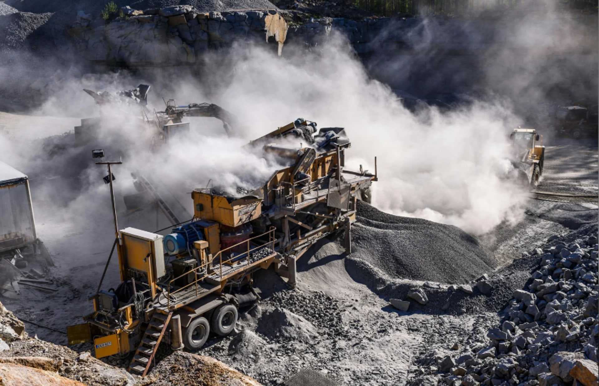
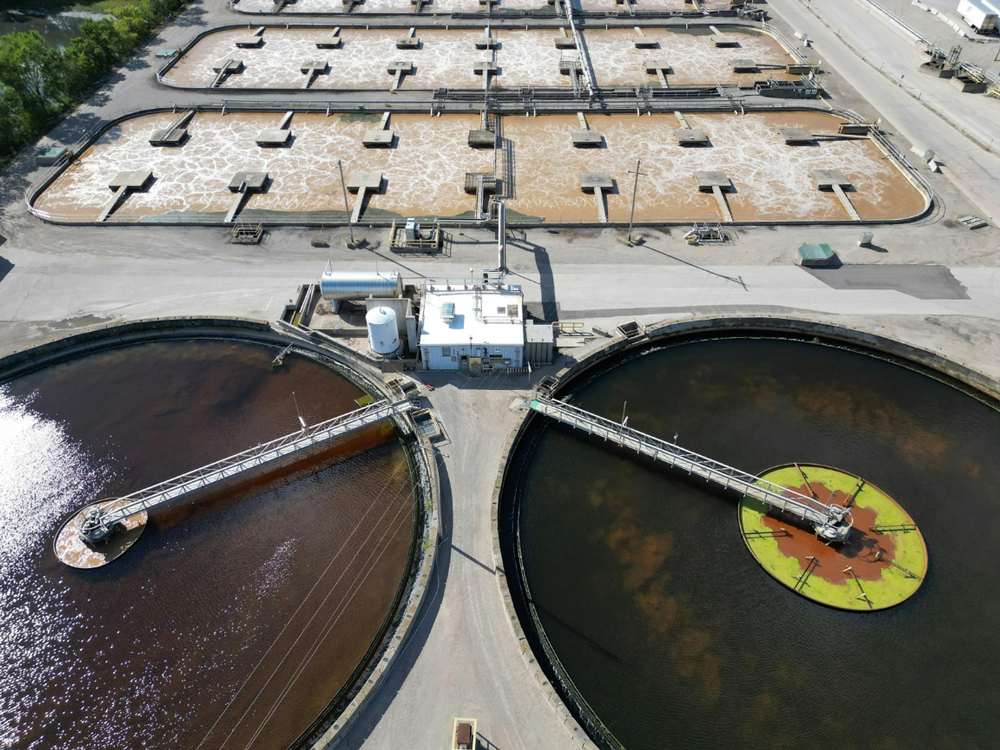
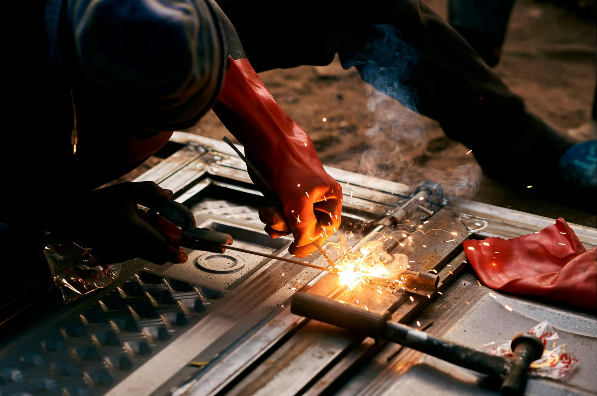

Secteurs d’intervention
Neuf secteurs, une même exigence technique
SUJO intervient auprès d’acteurs publics et privés dans neuf secteurs, avec une approche centrée sur la sécurité, la fiabilité des équipements, la disponibilité opérationnelle et la maîtrise des coûts.
Secteurs d’intervention
Pourquoi commencer avec SUJO ?

Construction & génie civil
Appui technique aux bâtiments, travaux de voirie, ouvrages et infrastructures publiques : cadrage, chiffrage et coordination.
En savoir plus
Mines, carrières & industries extractives
Fourniture d’équipements lourds et de pièces critiques, évaluation des installations et appui à la disponibilité opérationnelle.
En savoir plus
Énergie, électricité & hydroélectricité
Études, sélection d’équipements et coordination technique pour la production, la distribution et les projets hydroélectriques.
En savoir plus
Pétrole & gaz
Appui d’ingénierie pour le pompage, le stockage, la tuyauterie, la sécurité industrielle et les équipements de procédé.
En savoir plus
Industrie manufacturière & unités de production
Fiabilité des équipements, disponibilité des pièces et appui technique aux lignes de production et aux ateliers.
En savoir plus
Eau, assainissement & traitement des eaux usées
Solutions techniques pour stations de pompage, traitement de l’eau, assainissement et infrastructures municipales.
En savoir plus
Logistique, manutention & équipements ferroviaires
Évaluation d’équipements de manutention, de levage et ferroviaires, et identification des pièces qui conditionnent leur disponibilité.
En savoir plus
Administration publique & projets d’infrastructure
Assistance technique aux projets institutionnels : cadrage, chiffrage, dossiers de consultation et documents d’aide à la décision.
En savoir plus
Installations Industrielles & Maintenance des Équipements
Appui d’ingénierie pour usines, ateliers, entrepôts et installations techniques, avec un accent sur la disponibilité des équipements.
En savoir plus